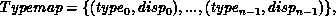
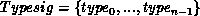
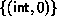
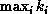
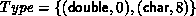

Up to here, all point to point communication have involved only contiguous buffers containing a sequence of elements of the same type. This is too constraining on two accounts. One often wants to pass messages that contain values with different datatypes (e.g., an integer count, followed by a sequence of real numbers); and one often wants to send noncontiguous data (e.g., a sub-block of a matrix). One solution is to pack noncontiguous data into a contiguous buffer at the sender site and unpack it back at the receiver site. This has the disadvantage of requiring additional memory-to-memory copy operations at both sites, even when the communication subsystem has scatter-gather capabilities. Instead, MPI provides mechanisms to specify more general, mixed, and noncontiguous communication buffers. It is up to the implementation to decide whether data should be first packed in a contiguous buffer before being transmitted, or whether it can be collected directly from where it resides.
The general mechanisms provided here allow one to transfer directly, without copying, objects of various shape and size. It is not assumed that the MPI library is cognizant of the objects declared in the host language. Thus, if one wants to transfer a structure, or an array section, it will be necessary to provide in MPI a definition of a communication buffer that mimics the definition of the structure or array section in question. These facilities can be used by library designers to define communication functions that can transfer objects defined in the host language --- by decoding their definitions as available in a symbol table or a dope vector. Such higher-level communication functions are not part of MPI.
More general communication buffers are specified by replacing the basic datatypes that have been used so far with derived datatypes that are constructed from basic datatypes using the constructors described in this section. These methods of constructing derived datatypes can be applied recursively.
A general datatype is an opaque object that specifies two things:
Let

be such a type map, where typei are basic types, and dispi are displacements. Let

be the associated type signature. This type map, together with a base address buf, specifies a communication buffer: the communication buffer that consists of n entries, where the i-th entry is at address buf + dispi and has type typei. A message assembled from such a communication buffer will consist of n values, of the types defined by Typesig.
We can use a handle to a general datatype as an argument in a send or receive operation, instead of a basic datatype argument. The operation MPI_SEND(buf, 1, datatype,...) will use the send buffer defined by the base address buf and the general datatype associated with datatype; it will generate a message with the type signature determined by the datatype argument. MPI_RECV(buf, 1, datatype,...) will use the receive buffer defined by the base address buf and the general datatype associated with datatype.
General datatypes can be used in all send and receive operations. We discuss, in Sec. Use of general datatypes in communication , the case where the second argument count has value > 1.
The basic datatypes presented in section Message data are particular cases of a general datatype, and are predefined. Thus, MPI_INT is a predefined handle to a datatype with type map  , with one entry of type int and displacement zero. The other basic datatypes are similar.
The extent of a datatype is defined to be the span from the first byte to the last byte occupied by entries in this datatype, rounded up to satisfy alignment requirements. That is, if

then
If typei requires alignment to a byte address that is is a multiple of ki, then is the least nonnegative increment needed to round extent(Typemap) to the next multiple of  . The complete definition of extent is given.
Example
Assume that

(a double at displacement zero, followed by a char at displacement eight). Assume, furthermore, that doubles have to be strictly aligned at addresses that are multiples of eight. Then, the extent of this datatype is 16 (9 rounded to the next multiple of 8). A datatype that consists of a character immediately followed by a double will also have an extent of 16.
[] Rationale.
The definition of extent is motivated by the assumption that
the amount of padding added at the end of each structure in an array of
structures is the least needed to fulfill alignment constraints.
More explicit control of the extent is provided in
section Lower-bound and upper-bound markers
. Such explicit control is needed
in cases where the assumption does not hold, for example, where union types
are used.
( End of rationale.)